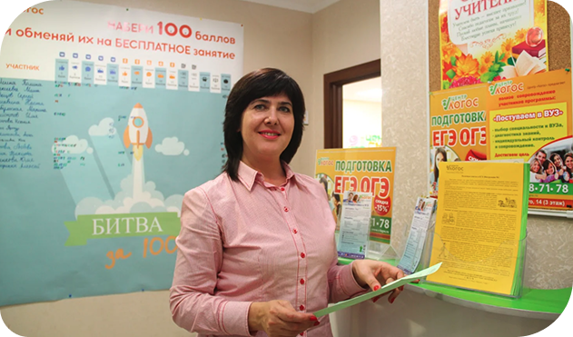
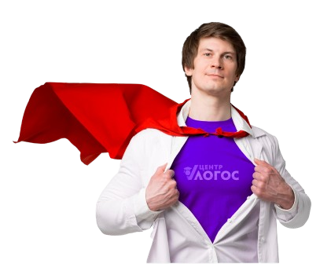

Центр “Логос” готовит к ЦТ
с 2009 года
20Преподавателей
20+Баллов к вашему
результату
результату
80%Учеников поступают в
вуз на бюджет
вуз на бюджет
5000Выпускников за все время
работы
работы
Центр “Логос” — организатор ЦТ-Марафона, в котором приняли участие 100 школ.
Более 300 учеников проверили свою готовность к экзамену, потренировались и бесплатно получили консультации экспертов ЦТ, чтобы улучшить свои баллы на экзамене.


Что нужно сделать для успешного старта подготовки к ЦТ?
Самое первое и самое важное — определиться с предметами и определить текущий уровень знаний по ним! Мы ежегодно тестируем более 2 500 учеников и даём персональные рекомендации по результатам тестов. Причём мы делаем это абсолютно бесплатно.
Запишитесь прямо сейчас и получите исчерпывающие рекомендации по подготовке.
Записаться на тестированиеЧем полезны курсы в
центре “Логос”?
- Подготовиться к ЦТ на высокие баллы
- Понять способности и предрасположенность ребёнка
- Знание всех нюансов экзамена
- Подготовиться в условиях дистанционного обучения
- Поступление в вузы страны на бюджет
- Подготовка с преподавателями — экспертами ЦТ
- Повышение школьной оценки
- Подготовка в условиях реального экзамена и помощь со стрессом